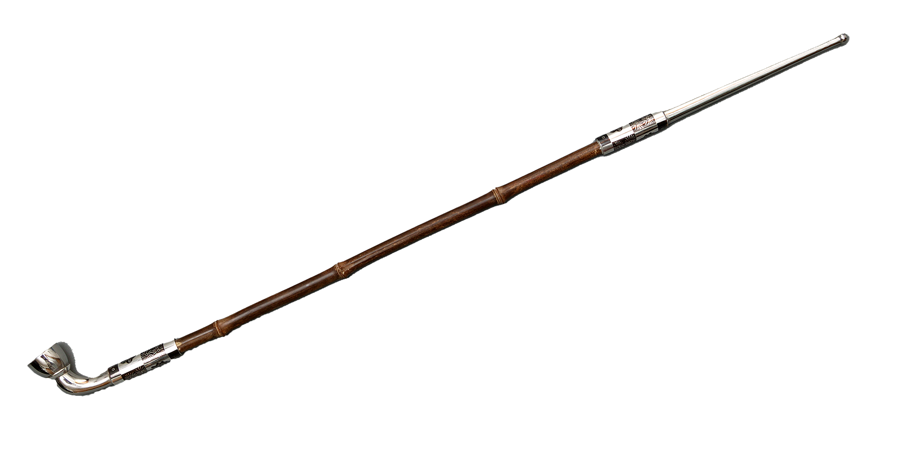

백동연죽장
백동으로 만든 담뱃대를 백동연죽이라 하며, 이를 만드는 기술

제작과정
백동연죽을 만드는 과정은 제일 먼저 백동을 만드는데 동 58%, 니켈 37%, 아연 5%의 비율로 합금한다. 니켈의 함류량이 많으면 백색이 나타난다. 합금한 금속들을 두드려 매우 얇게 만들고, 무늬를 넣어 모든 부분을 땜질하여 만드는데 금·은세공과 같이 섬세한 작업이 필요하다.
사용재료
담뱃대는 입에 물고 연기를 빨아들이는 물부리와 담배를 담아 태우는 대꼬바리 그리고 그것을 잇는 가는 대나무 설대 세 부분으로 구성된다. 대꼬바리는 열을 받는데다가 구조상 파손되기 쉬워서 구리, 놋쇠, 백동과 같은 금속으로 만든다. 물부리는 쇠붙이에 한하지 않고 옥(玉), 상아, 쇠뿔 등 비교적 여러 가지 재료를 자유롭게 사용하는 편이다.
특징
무늬 없는 백동죽은 민죽, 무늬 좋은 것은 별죽·꽃대라 부른다. 별죽은 재료에 따라 은물죽·오동죽이라 하고, 토리(끝에 씌운 쇠고리)의 무늬에 따라 송학죽·매화죽·용물죽·태극죽 등 여러 가지로 부른다.
전승자
| 보유구분 | 이름 | 성별 | 기예능 | 지역 | 인정일 |
|---|---|---|---|---|---|
| 전승교육사 | 황기조(黃起祖) | 남 | 백동연죽제작 | 전북 | 2004-03-20 |
소재지
전북